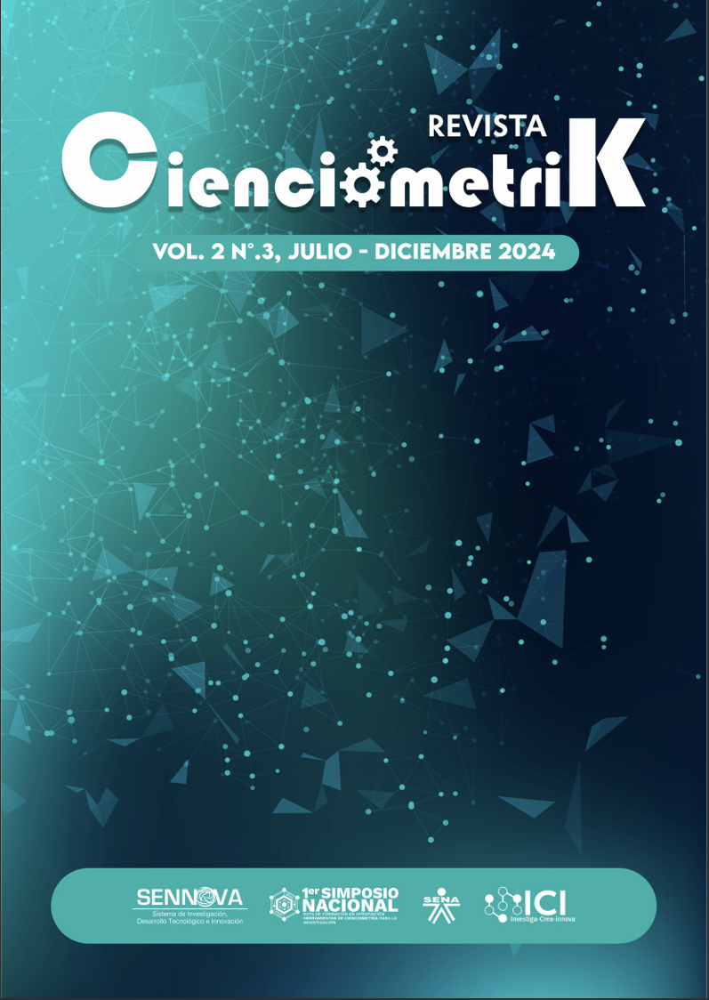

Último volúmen
Último volúmen
Bienvenido a la Revista Cienciometrik
Un espacio para la difusión del conocimiento científico y tecnológico del Sistema SENNOVA.
Historia de la Revista
La Revista Cienciometrik es una publicación semestral del Servicio Nacional de Aprendizaje SENA, específicamente del Centro de Comercio, Regional Antioquia, adscrita al Sistema de Investigación, Desarrollo Tecnológico e Innovación SENNOVA.
Convocatorias:
- Vol. 1 N°. 1 (Julio - Diciembre 2023): Convocatoria general para artículos de investigación.
- Vol. 2 N°. 2 (Enero - Junio 2024): Convocatoria general para artículos de investigación.
- Vol. 2 N°. 3 (Julio - Diciembre 2024): Convocatoria general para artículos de investigación.
- 1er Simposio Nacional de Cienciometría (Julio - Diciembre 2024): Convocatoria especial para ponencias y trabajos relacionados con herramientas de cienciometría.
Línea de Tiempo de la Revista
- Julio - Diciembre 2023: Publicación del Vol. 1 N°. 1.
- Enero - Junio 2024: Publicación del Vol. 2 N°. 2.
- Julio - Diciembre 2024: Publicación del Vol. 2 N°. 3 y realización del 1er Simposio Nacional de Cienciometría.
Enfoque de la Revista
La Revista Cienciometrik se enfoca en la difusión de investigaciones, desarrollos tecnológicos e innovaciones en diversas áreas del conocimiento, con un interés particular en la cienciometría como herramienta para el análisis y la mejora de la investigación.
Líneas que recibe la revista (ejemplos basados en los documentos):
- Cienciometría y estudios métricos de la información.
- Investigación pedagógica.
- Desarrollo de habilidades blandas y competencias socioemocionales.
- Gestión de la producción y optimización de procesos industriales.
- Innovación y desarrollo tecnológico aplicado.
- Economía verde, territorio y sustentabilidad.
- Administración, comercio y servicios.